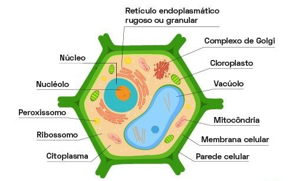

Representación de la célula vegetal
Introducción
La célula vegetal es la unidad estructural y funcional de los organismos del reino Plantae. A diferencia de la célula animal, posee estructuras exclusivas que permiten la fotosíntesis, el almacenamiento de agua y el soporte de la planta.
Estas células son fundamentales para el equilibrio ecológico, ya que producen oxígeno y sirven de base para la cadena alimentaria. Además, presentan una organización interna compleja, con varios orgánulos que desempeñan funciones específicas. Comprender estas estructuras es esencial para entender cómo las plantas crecen, se desarrollan e interactúan con el entorno.
Orgánulos de la célula vegetal
Pared celular
Estructura rígida compuesta de celulosa que rodea externamente la célula vegetal. Proporciona protección, forma y soporte, además de controlar la entrada de agua, evitando que la célula se rompa. La pared celular también permite que la planta mantenga su estructura incluso en ambientes con variaciones de humedad.
Membrana plasmática
Capa fina y flexible que rodea el citoplasma. Compuesta por una bicapa lipídica con proteínas, regula la entrada y salida de sustancias, manteniendo el equilibrio interno de la célula. Actúa como una barrera selectiva, permitiendo la entrada de nutrientes y la salida de desechos.
Citoplasma
Región interna de la célula donde se encuentran todos los orgánulos. Está compuesto por citosol, un líquido rico en proteínas e iones, que sirve como medio para las reacciones químicas esenciales para la vida celular. El citoplasma también ayuda en el movimiento de sustancias dentro de la célula.
Núcleo
Centro de control de la célula, donde se encuentra el ADN. El núcleo coordina actividades como el crecimiento, la reproducción y la síntesis de proteínas. Está rodeado por una membrana nuclear con poros que regulan el intercambio de sustancias con el citoplasma.
Vacuola central
Estructura grande y llena de líquido que ocupa gran parte del volumen celular. Almacena agua, iones, pigmentos y desechos. También ayuda con la presión de turgencia, que mantiene la célula firme y contribuye al soporte de la planta.
Cloroplastos
Orgánulos responsables de la fotosíntesis. Contienen clorofila, un pigmento verde que capta la luz solar y transforma la energía luminosa en energía química. Los cloroplastos tienen membranas internas llamadas tilacoides, donde ocurren las reacciones luminosas, y también poseen su propio ADN.
Mitocondrias
Conocidas como las “centrales energéticas” de la célula, las mitocondrias producen ATP mediante la respiración celular. Utilizan glucosa y oxígeno para generar la energía necesaria para las actividades celulares.
Retículo endoplasmático
Red de canales que transporta sustancias dentro de la célula. El retículo endoplasmático rugoso tiene ribosomas y participa en la síntesis de proteínas. El retículo endoplasmático liso actúa en la producción de lípidos y en la desintoxicación celular.
Complejo de Golgi
Responsable de modificar, empaquetar y distribuir proteínas y lípidos. Participa en la formación de la pared celular y de la vacuola, así como en la secreción de sustancias fuera de la célula.
Ribosomas
Estructuras responsables de la síntesis de proteínas. Pueden estar libres en el citoplasma o adheridas al retículo endoplasmático rugoso. Son esenciales para el crecimiento y la reparación celular.
Peroxisomas
Orgánulos que degradan sustancias tóxicas, como el peróxido de hidrógeno, y participan en el metabolismo de lípidos. Ayudan a proteger la célula contra el daño oxidativo.
Acerca de
Trabajo desarrollado por Felipe Martins de Lima, Jhuan Martins Bueno y Pedro Henrique Pereira Paiva, 1º año integrado en Informática, para la asignatura de Lenguaje de Programación Web y Biología. Este contenido tiene como objetivo presentar de forma clara y organizada las principales estructuras de la célula vegetal, destacando sus funciones e importancia para los seres vivos, y presentar nuestra maqueta.